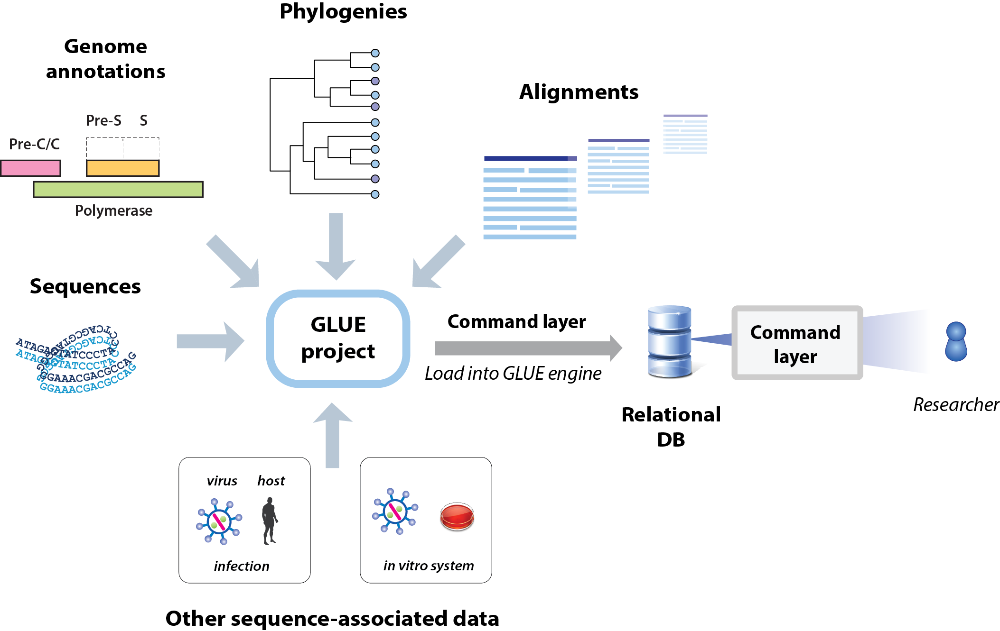

Comparative genomic analysis of hepadnaviruses using GLUE
This is Hepadnavirus-GLUE, a GLUE project supporting comparative genomic and evolutionary analysis of hepadnaviruses (family Hepadnaviridae).
Hepadnaviruses ( family Hepadnaviridae) are reverse-transcribing DNA viruses that infect vertebrates. The type species - hepatitis B virus (HBV) - is estimated to infect ~300 million people worldwide, causing substantial morbidity and mortality. Recent studies have revealed that hepadnaviruses infect a diverse range of vertebrate species, ranging from fish to mammals. They are associated with disease in many of these species.
Some of the vertebrate species known to be infected by hepadnaviruses: left to right: woolly monkeys, shrews, domestic cats, ducks.
Since the emergence of the SARS-COV2 pandemic, many have become familiar with the use of virus genome data to track the spread and evolution of pathogenic viruses - e.g. via tools such as NextStrain. However, it is less widely appreciated that the same kinds of data sets and comparative genomic approaches can also be used to explore the structural and functional basis of virus adaptations.
The GLUE software framework provides an extensible platform for implementing computational genomic analysis of viruses in an efficient, standardised and reproducible way. GLUE projects can not only incorporate all of the data items typically used in comparative genomic analysis (e.g. sequences, alignments, genome feature annotations) but can also represent the complex semantic links between these data items via a relational database. This 'poises' sequences and associated data for application in computational analysis, minimising the requirement for labour-intensive pre-processing of datasets.
GLUE projects are equally suited for carrying out exploratory work (e.g. using virus genome data to investigate structural and functional properties of viruses) as they are for implementing operational procedures (e.g. producing standardised reports in a public or animal health setting).
Hosting of GLUE projects in an online version control system (e.g. GitHub) provides a mechanism for their stable, collaborative development, as shown below.

What is a GLUE project?
GLUE is an open, integrated software toolkit that provides functionality for storage and interpretation of sequence data.
GLUE supports the development of “projects” containing the data items required for comparative genomic analysis (e.g. sequences, multiple sequence alignments, genome feature annotations, and other sequence-associated data).

Projects are loaded into the GLUE "engine", creating a relational database that represents the semantic relationships between data items. This provides a robust foundation for the implementation of systematic comparative analyses and the development of sequence-based resources.
Projects are loaded into the GLUE "engine", creating a relational database that represents the semantic relationships between data items. This provides a robust foundation for the implementation of systematic comparative analyses and the development of sequence-based resources. The database schema can be extended to accommodate the idiosyncrasies of different projects. GLUE provides a scripting layer (based on JavaScript) for developing custom analysis tools.
- COV-GLUE: A GLUE resource for tracking genetic variation in SARS-COV2. CoV-GLUE contains a database of amino acid replacements, insertions and deletions which have been observed in GISAID hCoV-19 sequences sampled from the pandemic
- RABV-GLUE: Tailored toward epidemiological tracking of rabies virus (RABV). Includes a database of RABV sequences and metadata from NCBI, updated daily and arranged into major and minor clades, and an analysis tool providing genotyping, analysis and visualisation of submitted FASTA sequences.
- HCV-GLUE: This GLUE resource aims to support analysis of drug resistance and vaccine escape in hepatitis C virus (HCV). A database of HCV sequences and metadata from NCBI, updated daily and arranged into clades (genotypes, subtypes). As well as pre-built multiple-sequence alignments of NCBI sequences, it includes an analysis tool providing genotyping, drug resistance analysis and visualisation of submitted FASTA sequences.
What does building the Hepadnavirus-GLUE project offer?
Hepadnavirus-GLUE offers a number of advantages for performing comparative sequence analysis of hepadnaviruses:
- Reproducibility. For many reasons, bioinformatics analyses are notoriously difficult to reproduce. The GLUE framework supports the implementation of fully reproducible comparative genomics through the introduction of data standards and the use of a relational database to capture the semantic links between data items.
- Reusable data objects and analysis logic. For many - if not most - comparative genomic analyses, data preparation is nine tenths of the battle. The GLUE framework has been designed to ensure that work spent preparing high-value data items such as multiple sequence alignments need only be performed once. Hosting of GLUE projects in an online version control system such as GitHub allows for collaborative management of important data items and community testing of hypotheses.
- Validation. Building GLUE projects entails mapping the semantic links between data items (e.g. sequences, tabular data, multiple sequence alignments). This process provides an opportunity for cross-validation, and thereby enforces a high level of data integrity.
- Standardisation of the genomic co-ordinate space. GLUE projects allow all sequences to utilise the coordinate space of a chosen reference sequence. Contingencies associated with insertions and deletions (indels) are handled in a systematic way.
- Predefined, fully annotated reference sequences: This project includes fully-annotated reference sequences for major lineages within the Hepadnaviridae family.
- Alignment trees: GLUE allows linking of alignments constructed at distinct taxonomic levels via an "alignment tree" data structure. In the alignment tree, each alignment is constrained to a standard reference sequence, thus all multiple sequence alignments are linked to one another via a standardised coordinate system.
There are a wide variety of ways in which the Hepadnavirus-GLUE resource can be used:
- To perform comparative genomic studies across the family Hepadnaviridae, e.g. as part of an investigation of hepadnavirus diversity.
- To facilitate in-depth comparative investigations of any virus species or group within the family Hepadnaviridae.
- As a source of systematically organised information about endogenous viral elements (EVEs) derived from hepadnaviruses.
NOTE: For those specifically interested in hepatitis B virus (HBV), we suggest to investigate our separate HBV-GLUE resource.
Installing Hepadnaviridae-GLUE
On computers with GLUE installed, the Hepadnavirus-GLUE project can be instantiated by navigating to the project folder, initiating GLUE, and issuing the following command in the GLUE shell:
Mode path: /
GLUE> run file buildCoreProject.glue
This will build the Hepadnavirus-GLUE core project by executing the commands in
this file.
The Hepadnavirus-GLUE project can be further extended to incorporate EVE sequences by executing the commands in this file, as follows.
Mode path: /
GLUE> run file buildPaleoProject.glue
The paleovirus extension of incorporates a set of endogenous viral elements (EVEs) recovered from the genomes of metazoan species. Building the paleovirus extension allows automated alignment and phylogeny reconstruction for individual eHBV lineages in the project, based on the classifications in these files. Individual eHBV sequences have been classified into sets considered likely to have arisen from the same germline colonisation event. Loci have been named using a systematic approach (see here for details).
License
This project is licensed under the GNU Affero General Public License v. 3.0.